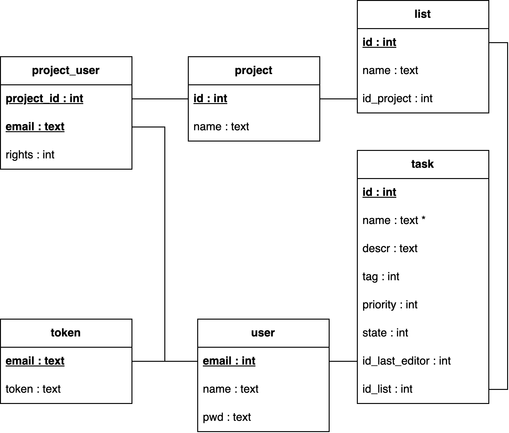

database
the database is a sqlite3 database and will be shortnamed "DB" here the chart of the database.
ℹ️ notes that this model will change a lot in the futur depending on the features added

database modelisation
explaination
User, List, Task, Token, project
do what thes looks to do
project_user
is the table to set users in project. the rights it's why it's seems to be.
for now only 2 rigts are implemented and used : - 1 : the owner (can edit metadata of project and c'ant be kicked of a project) - 0 : other's